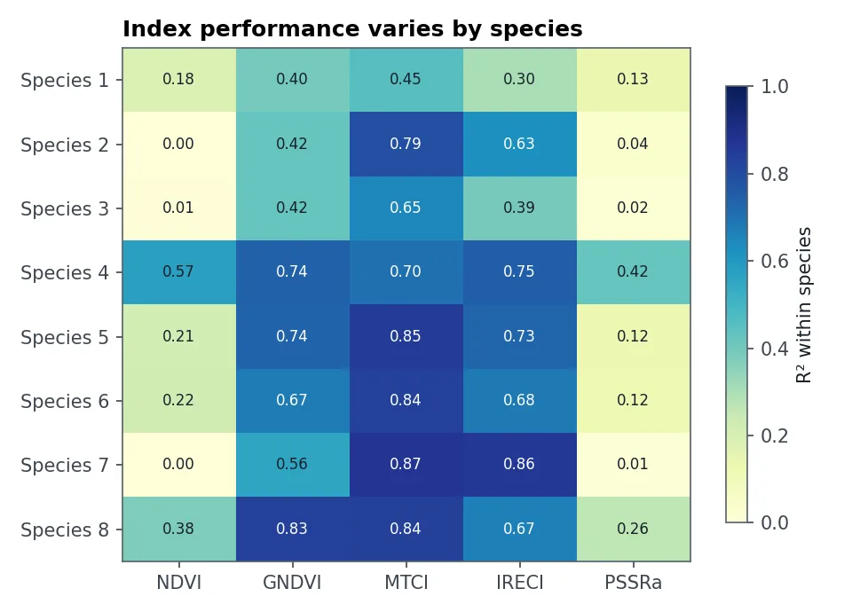
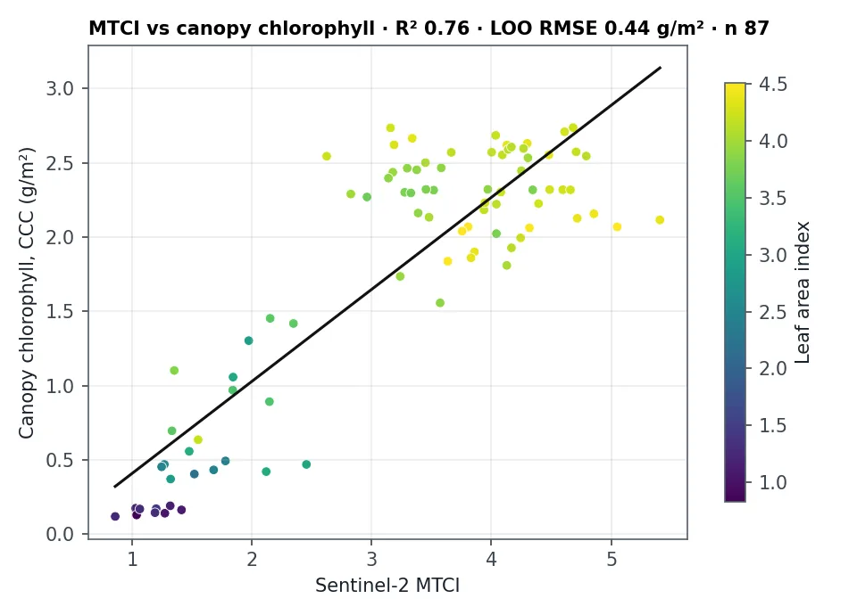

问题
农业顾问、林业人员和生态学家用卫星指数监测作物长势和森林健康。选错指数可能掩盖真实问题，因为有些指数在植物达到中等绿度后就不再有反应。
我做了什么
- 测量叶片反射率：160 片叶子 350 到 1050 nm 的光谱，以及实验室测得的叶绿素含量。
- 模拟 Sentinel-2 看到的结果：把每条光谱重采样到卫星波段，包括红边红边：叶片反射率在红光和近红外之间（约 690–750 nm）急剧上升的区段，其位置随叶绿素含量移动。波段。
- 计算五种指数：NDVI、GNDVI、PSSRa、MTCI 和 IRECI。
- 用三种方式测试每个指数：物种内、跨物种合并，以及模型从未见过的物种。
- 用真实 Sentinel-2 影像重复测试：在 New Forest 野外样地上，分别针对叶片和冠层叶绿素。
结果显示了什么

基于红边波段的两个指数表现最好。MTCI 能解释物种内约四分之三的叶绿素变化。IRECI 在新物种上最稳定，这在模型需要用于未训练过的作物时很重要。最常用的 NDVI 在好几个物种上几乎没有解释力，因为它在绿叶上会饱和。

从卫星上看，每个指数对冠层叶绿素（叶片叶绿素 × 叶面积）的反映都好于单纯的叶片叶绿素，因为一个像元看到的是整个冠层。
结果有多可靠？
- 实验室光照下的单片叶子比真实的 20 m 像元干净得多，后者混合了叶片、枝条、土壤和阴影。
- 卫星部分只有一个地区、一个季节（New Forest，2016 年 4 月到 10 月），用于其他地方需要重新校准。
- 实验室测量数据来自一个不能再分发的数据集，结果和代码是公开的。
可以交付什么
- 针对某种作物、森林或生境推荐使用哪个指数
- 附误差估计的指数—叶绿素校准模型
- Sentinel-2 季节性长势图
- 需要多少野外样本的建议